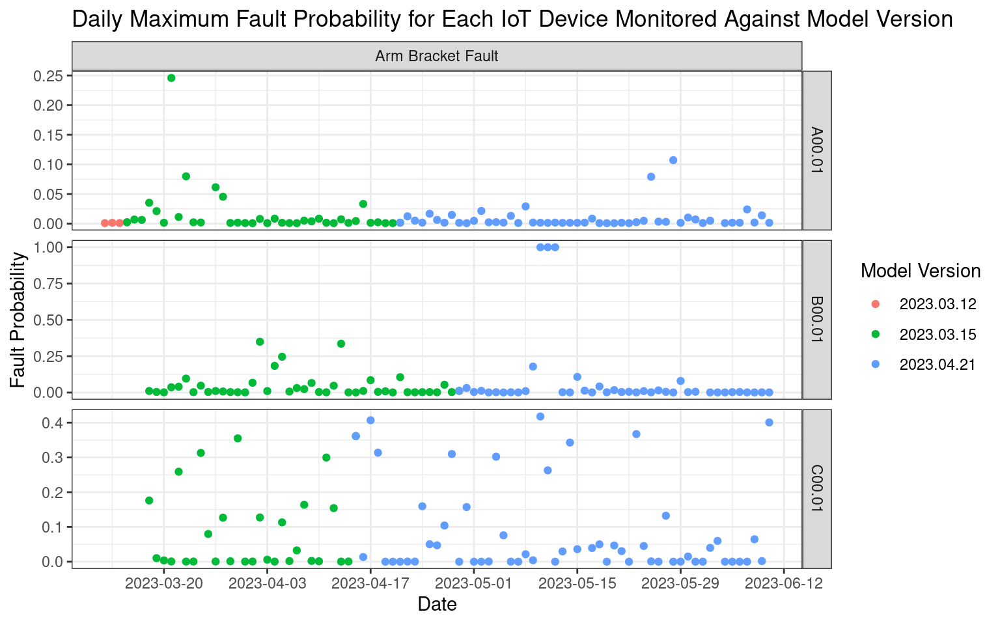

con <- dbConnect(
RPostgres::Postgres(),
dbname = "gd_phm_status",
host = Sys.getenv("gd_db_host"),
port = 5432,
user = Sys.getenv("gd_db_user"),
password = Sys.getenv("gd_db_pw")
)5 Query Stored Data

Data is stored in two AWS RDS databases:
gd_phm_status: Model output information, hardware maintenance information, versioning, and configuration settings.
metrics: This hosts accuracy and reliability metrics for many other projects. The table for this project is called “gd_phm”.
5.1 Example Workflow
5.1.1 Make a Connection
5.1.2 Get Relevant Table Names
tbl <- DBI::dbGetQuery(
conn = con,
"SELECT table_name
FROM information_schema.tables
WHERE table_name like '%gd%'
"
)
tbl |> pull(table_name) |> cat(sep = ", ")#> gd_meas_tbl, gd_config_hw_tbl, gd_config_models_tbl5.1.3 Query Data
tbl <- DBI::dbGetQuery(
conn = con,
"WITH joined_tbl AS (
SELECT
gd_config_hw_tbl.*,
meas_date,
meas_seq,
status,
gd_meas_tbl.model AS model,
prob,
model_version,
version_from,
version_to
FROM gd_config_hw_tbl
INNER JOIN gd_meas_tbl
ON (gd_config_hw_tbl.location_id = gd_meas_tbl.location_id)
INNER JOIN gd_config_models_tbl
ON (
gd_config_hw_tbl.location_id = gd_config_models_tbl.location_id AND
gd_meas_tbl.model = gd_config_models_tbl.model
)
)
SELECT
state,
city_code,
location_id,
model,
model_version,
meas_date,
MAX(prob) AS prob_max
FROM joined_tbl
WHERE (meas_date >= version_from AND ((version_to IS NULL) OR meas_date <= version_to))
GROUP BY state, city_code, location_id, model, model_version, meas_date;"
)
tbl |> head(10)#> state city_code location_id model model_version meas_date prob_max
#> 1 MN AAA A00.01 arm_brkt 2023.03.12 2023-03-12 0.0008547
#> 2 MN AAA A00.01 arm_brkt 2023.03.12 2023-03-13 0.0014096
#> 3 MN AAA A00.01 arm_brkt 2023.03.12 2023-03-14 0.0009876
#> 4 MN AAA A00.01 arm_brkt 2023.03.12 2023-03-15 0.0023421
#> 5 MN AAA A00.01 arm_brkt 2023.03.15 2023-03-15 0.0023421
#> 6 MN AAA A00.01 arm_brkt 2023.03.15 2023-03-16 0.0069242
#> 7 MN AAA A00.01 arm_brkt 2023.03.15 2023-03-17 0.0062839
#> 8 MN AAA A00.01 arm_brkt 2023.03.15 2023-03-18 0.0352436
#> 9 MN AAA A00.01 arm_brkt 2023.03.15 2023-03-19 0.0210955
#> 10 MN AAA A00.01 arm_brkt 2023.03.15 2023-03-20 0.00150775.1.4 Plot Data
tbl |>
filter(meas_date < as.Date("2023-06-11")) |> # to reproduce the landing page
mutate(model = ifelse(model == "arm_brkt", "Arm Bracket Fault", model)) |>
ggplot(aes(meas_date, prob_max, col = model_version)) +
geom_point() +
facet_grid(location_id~ model, scales = "free") +
scale_x_date(date_breaks = "2 weeks") +
labs(
title = "Daily Maximum Fault Probability for Each IoT Device Monitored Against Model Version",
x = "Date",
y = "Fault Probability",
col = "Model Version"
)
5.1.5 Important!
Please close the connection after you are done.
dbDisconnect(con)